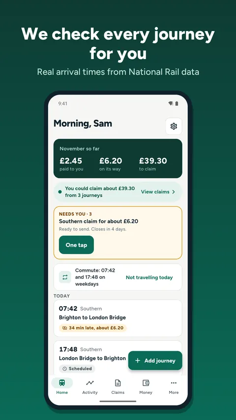
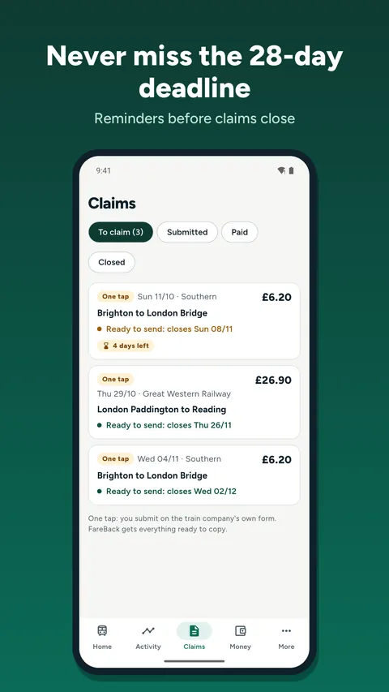

Independent app. FareBack is made by Kodfu Bilisim. It is not affiliated with or endorsed by any train company, National Rail, Network Rail, Rail Delivery Group, Great British Railways or the Department for Transport. You submit every claim yourself; the train company decides whether to pay.
What a late train is worth
Delay Repay pays a share of the fare you paid, measured by how late you reached your destination. On the most common scheme (DR15):
| Arrival delay | Single | Return, one way late |
|---|---|---|
| 15 to 29 minutes | 25% | 12.5% |
| 30 to 59 minutes | 50% | 25% |
| 60 to 119 minutes | 100% | 50% |
| 120 minutes or more | 100% | 100% |
Some companies start at 30 minutes (DR30), and a few run their own schemes. You usually have 28 days to claim. Every rule, with worked examples: Delay Repay explained.
How FareBack works

1. Save your journey
Pick your stations, date and train, and add what you paid to see amounts. Commuters save the trip once and FareBack Pro checks it every travel day.
2. FareBack checks the real arrival time
After the train is due, FareBack looks up how late it really arrived in National Rail data (Darwin and Historical Service Performance) and shows you where the time came from. If a train is not in the data, you can enter your arrival time.

3. See if you can claim, and roughly how much
FareBack applies your train company’s threshold and bands, for all 26 train companies, and shows an estimate such as “about £6.20”. It also tells you when the company may pay automatically, so you do not claim twice.
4. Claim in about a minute
Your Claim Pack has every detail the form asks for, each with a copy button, your ticket photo and a link to the right claim form. You submit the claim yourself on the train company’s website, and the money goes straight to you.

5. Never miss the 28-day window
Reminders come before each claim closes, and the claim tracker follows every claim from submitted to paid, with a running total of money recovered.
Free, or Pro for your commute
Free
£0
- Up to 30 journeys a month, checked after they arrive
- Claim Packs with copy buttons and ticket photos
- Reminders before the 28-day claim window closes
- Claim tracker and money recovered total
- Delay Repay calculator for single, return and season tickets, offline
- See what your commute could have claimed over the last 28 days
FareBack Pro
£1.99 a month
- Your commute checked every travel day, skipping bank holidays
- Season ticket maths done for you: weekly, monthly, annual and flexi
- Look back 28 days and get a Claim Pack for every delay you can still claim
- Unlimited journeys (fair use) and claim history export
- Or £12.99 a year with a 7-day free trial. Prices include VAT.
One 30-minute delay on a £10 single is worth £5, more than two months of Pro. Why Pro pays for itself for commuters.
Claim from your train company
Each company sets its own threshold, deadline and claim form. Our guides were checked on each company’s own pages on 28/11/2026.
- SouthernDelay Repay from 15 minutes · Auto Delay Repay for Key Smartcards
- ThameslinkDelay Repay from 15 minutes · Auto Delay Repay for Key Smartcards
- NorthernDelay Repay from 15 minutes · free tickets as an option
- Avanti West CoastDelay Repay from 15 minutes · account needed
- TransPennine ExpressDelay Repay from 15 minutes · new claim system since 18/10/2026
- Great Western RailwayDelay Repay from 15 minutes · Automated Delay Repay for some tickets
- South Western RailwayDelay Repay from 15 minutes · account needed
- SoutheasternDelay Repay from 15 minutes · One Click Delay Repay
- All 26 train companiesLNER, ScotRail, CrossCountry, Greater Anglia, TfW and more
Know your rights
- Season ticketsWhat each delayed journey is worth, and strike days
- Cancelled trainsRefund if you don't travel, Delay Repay if you do
- Missed connectionsMeasured at your final destination
- Split ticketsYes, you can still claim
- StrikesRefunds and season ticket days
- Claim rejected or underpaid?How to challenge it, with a letter to copy
- Rail OmbudsmanFree, independent, binding on the train company
Let FareBack watch your trains
Save a journey and FareBack checks how late the train really arrived, using National Rail data, after it is due. If you can claim, you see the delay, the train company’s rule and an estimate, and your Claim Pack is ready: every detail with a copy button and a link to the right claim form. You submit the claim yourself, and every penny goes to you.
Free: up to 30 journeys a month checked, Claim Packs, reminders before the 28-day window closes, a claim tracker and a Delay Repay calculator for single, return and season tickets.
FareBack Pro, £1.99 a month or £12.99 a year (7-day free trial on annual): your commute checked every travel day, season ticket maths done for you, a 28-day look-back with a Claim Pack for every delay you can still claim, unlimited journeys and claim history export. Prices include VAT.
Android now; iPhone version not yet available. For train journeys in Great Britain. FareBack never takes a cut.
Delete your FareBack data
In the app: open the More tab and tap Delete all my data. This deletes your data from our server straight away and wipes FareBack’s data from your phone. If you want a copy first, use the export in the app.
By email: if you no longer have the app, email gurkancaner@kodfu.com with the subject “Delete my FareBack data”. FareBack has no accounts, so we cannot look you up by name or email address: tell us roughly when you last used FareBack and which journeys you saved (dates, stations and train company), and we will find and delete the matching data on our server. Data on your phone is removed when you uninstall FareBack.
What we delete anyway: journeys are deleted from our server 35 days after the travel date (60 days if the train was delayed or cancelled), and everything linked to an install we have not seen for 13 months is deleted. The full retention table is in our privacy policy.
Help with the app, subscriptions and notifications: FareBack support.